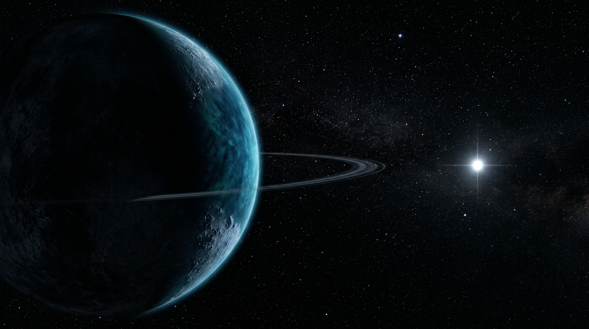

FALLING THROUGH THE COSMIC SILENCE
NASA's SPHEREx observatory scans the entire sky every 6 months across 102 infrared bands — hunting for cold brown dwarfs, rogue exoplanets, and the elusive Planet X.
What We Have Built
Engineered specifically for the NASA Space Apps Challenge 2026. A zero-cost, high-performance web architecture combining client-side astrophysics with 240fps+ scrollytelling.
1. Dual-Viewport Architecture
Two purpose-built consoles on a unified data core: a gamified Citizen Explorer for public engagement and a 3-column Scientist Console for professional researchers.
DUAL ENGINES2. 102-Band Hyperspectral Engine
Calibrated SPHEREx Level-2 science matrices spanning 0.75–5.0 µm. Extracts continuous Spectral Energy Distributions (SED) to isolate methane (1.66 µm) and water-ice absorption dips.
FITS PIPELINE3. Time Machine ITOM Shader
Interactive dual-layer canvas overlaying Clyde Tombaugh's historical 1930 Lowell photographic discovery plates against 2026 SPHEREx infrared dipole scans with interactive thermal aperture.
CANVAS SHADER4. NASA Benchmark Verification
Validated against 5 ground-truth targets: Barnard's Star (>10"/yr proper motion), WISE 0855 (coldest ~250K Y-dwarf), Epsilon Indi B (T1+T6 binary), and variable stars.
BENCHMARK SUITEChoose Your
Discovery Path
One engine. Two distinct experiences designed for distinct audiences.
Citizen Explorer
Spot shifting asteroids, listen to infrared spectra, and verify outer solar system candidates.
- Interactive Blink Comparator
- Interactive Spectral Analysis
- Easily understandable interface
Scientist Mode
Full 3-column dashboard. Load FITS, scrub 102 spectral channels, overlay Gaia DR3 proper motion.
- 6 Comparison Engines (Blink, Diff, RGB)
- 102-Band SED Molecular Chart
- JSON Discovery Dossier Export
How to Use the Consoles — Audience & Workflows
Step-by-step operational workflows tailored for each console mode.
Students, educators, astronomy hobbyists, citizen scientists, and general public seeking intuitive space exploration.
Toggle multi-epoch survey frames. Fixed background stars remain static while moving solar system bodies (asteroids, KBOs, Planet X) noticeably shift position.
Listen to 102 infrared wavelengths mapped to acoustic audio frequencies. Deep pitch troughs reveal cold planetary methane and water ice absorption bands.
Confirm the moving target coordinates, view simplified orbital trajectory data, and flag confirmed candidates for peer-review research.
Professional astrophysicists, observational astronomers, planetary dynamicists, and university data researchers.
Ingest Level-2 calibrated FITS science cubes with WCS coordinates. Scrub across 102 discrete channels (0.75–5.0 µm) with custom stretch and color mapping.
Cross-match coordinates with Gaia DR3 proper motion (μα, μδ) and parallax (ϖ) vectors to eliminate high-velocity stellar foreground interlopers.
Compute χ² model fits against cold sub-stellar atmospheric grids (~40K–250K) and export cryptographically verifiable JSON discovery dossiers.
Clyde Tombaugh 1930
vs SPHEREx 2026
In 1930, Clyde Tombaugh spent 7,000 hours examining glass plates to find Pluto. Today, SPHEREx peels back cosmic obscuration across 102 infrared channels. Scrub your cursor over the vintage plate below to reveal the 2026 infrared dipole.
Hunting at 500 AU
Orbital clustering of extreme TNOs strongly suggests a 5–10 M⊕ world orbiting the outer solar system. At 500 AU, only SPHEREx's thermal infrared at 3.0–5.0 µm can detect it.
The Challenge: Planet X & SPHEREx
Hunting for an elusive 5–10 Earth-mass planet in the outer solar system using NASA's Spectro-Photometer for the History of the Universe, Epoch of Reionization and Ices Explorer.

Level-2 calibrated science matrices
Resources Used
Scientific data sources, astronomical catalogs, official NASA documentation, and cloud infrastructure used throughout this project.
SPHEREx Quick Release 2 all-sky spectral survey data and calibrated infrared imaging cubes.
- Coverage: 102 continuous bands (0.75 – 5.0 µm)
- Resolution: 6.2 arcsec/pixel with WCS astrometry
- Format: Multi-extension FITS data cubes
High-precision proper motion vectors and stellar parallax baselines to filter galactic foreground stars.
- Sources: 1.806 billion stars with 5-parameter astrometry
- Precision: Sub-milliarcsecond proper motions (μα, μδ)
- Cross-Match: On-the-fly cone search within 10 arcseconds
Official challenge guidance, SPHEREx mission instrument guides, and planetary clustering whitepapers.
- Challenge: Planet X & SPHEREx Resource Suite
- Mission Scope: 6-month survey cadence & Kuiper limits
- Data Standards: NASA Open Science guidelines
Progressive Hierarchical All-Sky Surveys (HiPS) engine for interactive client-side sky navigation.
- Surveys: AllWISE, 2MASS, DSS2 optical & infrared
- Rendering: Hardware-accelerated WebGL tile streaming
- Integration: Native ES module + fallback embed
Clyde Tombaugh's historical discovery photographic plates digitized for the interactive Time Machine shader.
- Plates: 14x17 inch glass emulsion photographic negatives
- Optics: 13-inch Lawrence Lowell astrograph
- Shader: Interactive HTML5 dual-canvas comparative brush
Cloud-hosted astronomical datasets enabling low-latency, range-request FITS data streaming.
- Protocol: HTTP Range request chunk streaming
- Latency: Zero-backend direct client-side parsing
- Throughput: High-bandwidth planetary matrix delivery
Meet The Team
Created by Team Prometheus for the NASA Space Apps Challenge 2026.
Swapnil Kumar
Astrophysics Pipeline & Explorer modeDesigned the idea and implemented the core architecture for the explorer panel.
Diwakar
Creative Technologist of Scientific mode & UXBuilt the UX of web. and developed the scientific panel.
Contact Us & Project Links
Explore our codebase, test the scientist console, or review our NASA Space Apps Challenge 2026 submission dossier.